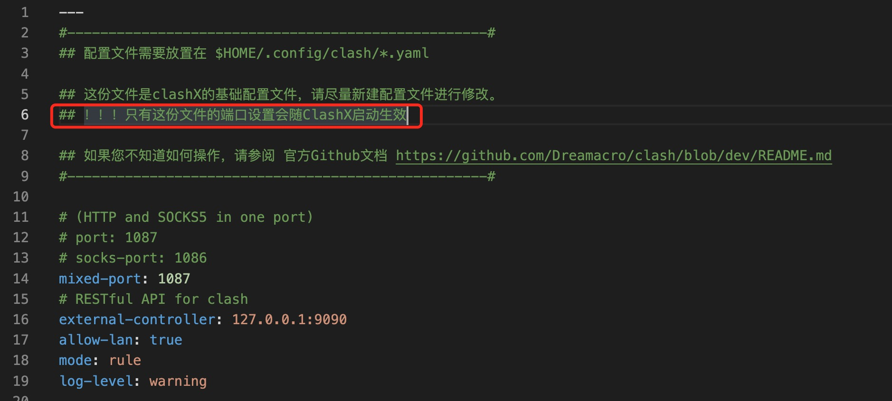

这里主要用来记录我生活中的所思所想，当然大部分可能是跟计算机、编程有关的。这些想法或者摘抄比较短小，不足以形成一篇文章，但仍然值得记录下来反复品味，回顾。它们的编排方式是按日期倒序来的。
2022-09-01
当 cherry-pick 产生冲突，怎么退出 cherry-pick？
答案是用：git cherry-pick --abort
cherry-pick 的参数挺多的，可以自己在命令行看一下：
1 | $ git cherry-pick |
2022-08-31
git 合并的时候，如果本地代码过旧（比如本地代码是两个月前的），可能会发生一些意想不到的问题，合并的时候抛弃了线上分支的许多代码和文件，但 commit 记录里面却没有体现。这个时候想要 revert 发现报错了：
git revert is a merge but no -m
因为需要回滚的 commit 是一个 merge 动作，需要显示给出-m（mainline）选择告诉 git 回滚具体哪一个 mainline。
解决办法有两种，一种是 git reset 到合并前，然后 force push（这种办法的好处是不会产生多于的 commit），但如果开了分支保护，无法强推，就只好换另一种办法，还是 git revert，但要多加一个-m 参数：https://blog.csdn.net/yanlaifan/article/details/115761272
先看看用:git show commitHash查看 merge 了哪两个 mainline，然后指定回滚到哪个 mainline：
git revert commitHash -m 2，回滚到第二个 mainline。
这样的话就能成功 revert 了，虽然找回了之前 mainline2 的代码，但这种做法的缺点是 mainline1 和 mainline2 的所有不同的代码行的 commit 信息全部变成 revert 这个 commit 的信息了
2022-08-25
typescript 的一些常见用法：
使用数组中限定的 string
1 | let arr = ['a', 'b'] as const; |
上述代码会报错，因为 typeof a 限定了 b 的类型是'a'|'b'，as const既可以让 a 是 readonly 类型，又可以让 typeof a 类型从 string 缩窄到'a'|'b'
使用对象中限定的 string
1 | let obj = { |
这样可以获取对象的 value，每多一层，就可以多加一个 Item。
那怎么获取对象的 key 呢？代码如下：keyof typeof
1 | let obj = { |
而且这个是不用 as const 也可以的
2022-08-23
没什么用，但用起来很爽的快捷键，Vscode 清除没有用到的 import 语句：
Mac:
option+shift+O
windows:
Alt+shift+O
高内聚，低耦合
- 高内聚是减少了代码量，增加复用，避免改了这里还要改那里
- 低耦合是增加了代码量，减少复用，避免改了这里却动到了那里
本质上都是为了少修改代码，减少工作量
2022-08-01
重新做了一遍这个 CSS 选择器训练：CSS Speedrun | Test your CSS Skills
有些我还是用的挺少的，比如:nth-child(2n+3)，img ~ p，a + span，:enable，平常用的最多的应该就是属性选择器了，都还是靠加属性来标记的
2022-07-25
HTTP3.0 居然都有了，而且居然放弃了 TCP 作为传输层协议：HTTP 3.0 彻底放弃 TCP，TCP 到底做错了什么？
npm 的依赖版本问题: ^，~，*以及不带前缀的区别
~会匹配最近的小版本依赖包，比如~1.2.3 会匹配所有 1.2.x 版本，但是不包括 1.3.0^会匹配最新的大版本依赖包，比如^1.2.3 会匹配所有 1.x.x 的包，包括 1.3.0，但是不包括 2.0.0- 写
*，这意味着安装最新版本的依赖包 - 版本号不带前缀，则固定安装这个版本
最后 package-lock.json 会锁住版本，所以如果想要重新安装，要删掉里面的相关配置
2022-07-22
翻自己的豆列发现收藏了 15 篇文章，但没啥印象，于是一个一个打开看，其中有一篇是讲消费品味的，一直觉得自己在穿衣打扮方面注意得比较晚，上面推荐的几款东西，看起来还不错，到时候挑一些买。
2022-07-21
帮组员解决一个 tinymce.js 在 nextjs 中报错的问题，原因是 tinymc.js 中使用了 navigator，服务端没有这个对象。
nextjs 遇到必须在客户端渲染的内容，要怎么办呢？答案是判断环境：
1 | if(typeof window !== 'undefined'){ |
2022-07-17
猫砂要怎么选？今天做了一下功课
首先要知道猫砂的四个重要属性：
- 易结块
- 吸味，除臭
- 尘少
- 不粘底，不粘铲
然后是猫砂分类，主要分为这四类：
- 膨润土猫砂
- 优点：膨润土猫砂是历史最悠久的猫砂，在结团上面有非常出色的表现。膨润土猫砂的吸水性是不错的，可以将粪便里的水分和尿液完全吸收，凝结成一个大硬团，清理起来比较方便，而且比较符合猫咪在野外的感觉，对猫咪的脚感也比较好。且便宜。
- 缺点：便宜的粉尘特别大，并且不能冲厕所。
- 松木猫砂
- 水晶猫砂
- 豆腐猫砂
- 优点：可以直接冲厕所
如果不考虑直接冲厕所的话，肯定是膨润土和混合猫砂最好。
参考资料
第二篇文章的测试手法挺有意思的。
2022-07-06
目前 lceda 的原理图和面板项目都还是用的 svg 来做画布，但对于 svg 的很多东西其实我并不熟悉，今天看了一篇文章了解了一下 text 和 tspan 的 dx 和 dy 的用法：
dx 和 dy 可以是一串以空格分界的数字，这样就可以微调每个字符了，每个数字会影响之后的所有字符，而且多个 tspan 的 dx 和 dy 前一个 tspan 会影响后面的。这个设计看起来还不错。
2022-07-05
crypto.subtle 在不安全的上下文中是 undefined，比如当网站是 http 的时候。
How to use SubtleCrypto in chrome (window.crypto.subtle is undefined)
2022-06-30
textarea 中按住 ctrl，alt，shift 以及 win 这几个键，再按 enter，有的能换行有的不能：
能换行的：
- shift
不能换行的（什么都不触发）：
- ctrl
- alt
- win
怎么控制光标位置：让输入框的 selectionStart 等于 selectionEnd
2022-06-23
异或交换
1 | function swapTwoNumber(a, b){ |
异或交换在交换同一个数（内存地址相同，而非仅仅数值相同）的时候，会把这个数变成 0，比如 swap(x,x)，由于执行第一步a ^= b;的时候，已经让 x 变成了 0，所以后面再执行剩下两步的时候也变不回来了。
2022-06-17
弹框等待用户交互
如何实现：在一个弹框的回调（用户点击是或者否）之后才执行接下来的逻辑？
答案是：用 Promise 就可以阻断代码流程，弹框之后的逻辑必须等待弹框的回调函数中的 resolve 或 reject 被执行，才能接着执行，而回调函数则必须等待用户的点击，这样就实现了一个等待用户交互的逻辑。
TS 表达一个对象类型
TS 我一直用的比较少，之前还想一个对象 key 和 value 都是 string，用 ts 怎么表示：let v: {[key:string]:string}
2022-06-16
在使用 HTMLInputElement.setSelectionRange()时发现一个问题，超出 input 的宽度的位置无法被定位到，也就是说它不会滚动文本，如果想滚动到指定位置怎么办呢？目前还不知道怎么解决。
2022-06-15
最近工作很杂乱，事情很多，今天了解了一下斜切是什么，我原先以为是平移+旋转，没想到根本不是，斜切其实是倾斜。最近同事在做斜切椭圆的四点控制，这是他写的关于图形变换的基础的博客：https://zengxiaoluan.com/matrix-image。从今天开始打算把之前wordpress被黑丢失的博客补一补了，主要是一些前端的面试考察点以及工作中遇到的问题和解决方案，大部分可能都想不起来了，能补多少是多少吧。浏览器书签和我来笔记都有点乱，有空也要整理一下。
2022-06-12
今早上一起来发现服务器居然连不上了，试了一下居然 ping 不通了，估计是这个 ip 又被墙了。为了尽快弄好翻墙的，我试了朋友发给我的 clashX 以及翻墙配置，真的不错，速度非常快。
主要参考了这篇文章：https://github.com/Hackl0us/SS-Rule-Snippet
Clash 项目地址：https://github.com/Dreamacro/clash
ClashX 项目地址：https://github.com/yichengchen/clashX/
ClashX windows 下载地址：https://github.com/Fndroid/clash_for_windows_pkg/releases/tag/0.19.25
ClashX Pro macOS 下载地址：https://install.appcenter.ms/users/clashx/apps/clashx-pro/distribution_groups/public
ClashX Android 下载地址：https://github.com/Kr328/ClashForAndroid/releases/tag/v2.5.9
云配置：https://s.trojanflare.com/clashx/a2558d44-d9ca-4dd6-bdba-118c8b5af032
Clash 文档：https://lancellc.gitbook.io/clash/
发现修改 ClashX 的端口不生效，后来找到了原因，原来必须要修改 config.yaml 文件才行：https://github.com/yichengchen/clashX/#Advance Config，其实默认配置里的注释也写了这个坑，但是我瞎了没看到：

我是在 github 的 issue 里面搜到的，反正万事解决不了提 issue。
2022-06-11
wordpress 博客被黑
最近想把 wordpress 上的文章迁移到 github.io。今天一打开我的 wordpress 博客，突然直接跳到 wordpress 的安装界面，我感觉挺奇怪的，有种不好的预感。打开数据库一看果然又被黑了，除了 wordpress 数据库，顺带其他几个 mysql 的数据库也被黑了。因为我还在我服务器上跑着我自己写的量化交易的脚本，mysql 的某个数据库里面有币安的 api key，吓得我立马去币安删 api。我担心可能 linux 服务器的账号密码都被黑了，而且也有可能在我服务器放了什么其他可怕的病毒，干脆还是重置一下服务器，以及相关的所有账号密码。
上次我的 wordpress 被攻击还是 2016 年的事了，当时我才没用几个月，写了大概三篇文章，就被黑了，当时黑客留下来的是个 QQ，这次是个比特币地址：
1 | readme: |

可惜我写了这么多文章都还没有备份
办理身份证
今天顺带把身份证重新办了一下，办理身份证前首先需要去照相馆照一张身份证证件照，然后再去派出所户政室办理。证件照需要上传到一个照片质量检测网站上进行核对，并产生一个编号。去户政室的时候提供这个编号他们就可以找到这个照片了。
我是在深圳本地宝上面查到当地派出所户政室的地址的：
http://m.bendibao.com/bsy616684.html
景田的户政室已经从原来的地方搬到香蜜湖了，在高德地图上可以搜得到香蜜湖的户政室地址：福田公安分局香蜜湖户政服务中心，另外他们的办公时间也改了，下午 4 点就收摊了。
2022-06-10
今天发现一个 bug 跟 tagName 有关，原因是 document 没有 tagName，document.tagName 是 undefined，导致代码报错。
toJSON()方法
一个对象定义了 toJSON 方法的话，JSON.stringify 就会去调用这个方法，返回定制化的字符串。
官方文档：https://developer.mozilla.org/zh-TW/docs/Web/JavaScript/Reference/Global_Objects/JSON/stringify
If an object being stringified has a property named toJSON whose value is a function, then the toJSON() method customizes JSON stringification behavior: instead of the object being serialized, the value returned by the toJSON() method when called will be serialized. JSON.stringify() calls toJSON with one parameter:
- if this object is a property value, the property name
- if it is in an array, the index in the array, as a string
- an empty string if JSON.stringify() was directly called on this object
1 | const bonnie = { |
大型软件的设计很重要
为 EDA 写了快三年代码了，我的感觉就是对于稍微复杂一点的软件，设计真的很重要。在新加某个需求后，可能因为不好的设计产生很多 bug，也有可能因为原先存在的代码设计不合理，导致新需求很难写，到处都要埋点。
我的 leader 写了这段话，我觉得很对：
很多糟糕的设计隶属于某个更大的糟糕设计，而这个更大的糟糕设计可以被一两行精妙的代码整个代替掉，你在局部优化半天毫无意义。
2019-02-27
Java 反射，反射的作用包括，在运行时判断一个对象所属的类，给某个未知的类新建一个对象，获取任意一个类的成员变量和方法，并调用。如果你是初学反射，这么说你一定不知道我在说什么。但举个例子就比较容易理解了。那就是用配置文件动态控制程序要加载的类：
举个例子我们的项目底层有时是用 mysql，有时用 oracle，需要动态地根据实际情况加载驱动类，这个时候反射就有用了，假设 com.java.dbtest.myqlConnection，com.java.dbtest.oracleConnection 这两个类我们要用，这时候我们的程序就写得比较动态化，通过 Class tc = Class.forName("com.java.dbtest.TestConnection");通过类的全类名让 jvm 在服务器中找到并加载这个类，而如果是 oracle 则传入的参数就变成另一个了。这时候就可以看到反射的好处了，这个动态性就体现出 java 的特性了！举多个例子，大家如果接触过 spring，会发现当你配置各种各样的 bean 时，是以配置文件的形式配置的，你需要用到哪些 bean 就配哪些，spring 容器就会根据你的需求去动态加载，你的程序就能健壮地运行。
在使用 Python 的时候我就通过用配置来控制代码。体验非常棒。其实反射的作用就是通过配置控制代码。
是否要传数组长度的问题
Java 中数组是一个对象而非像 C++一样的原始类型，所以可以对数组求长度的时候是这么写：arr.length()，而 C++则没有这么方便的东西，所以传参的时候，Java 可以不传数组长度，C++必须要传：
1 | func(arr, lengthOfArr); |
spring boot
随着计算机的发展，在应用程序开发中，很多东西都慢慢工具化了，大量简单重复的工作直接交给计算机就好了，留给人们的只是业务逻辑跟架构调优。spring boot 2 就是一个非常好用的 Java web 集成框架。学习最好的方法就是通过 例子 来领悟和体会到其中抽象的知识（共性）。对于工具的使用则更加强调动手实践。
先参考一下网上的资料：
第一步快速入门
如果对 spring boot 一点都不了解的话，要先了解一下 spring boot 是什么，它的发展历程，从而建立起一个简单的印象。可以先看 B 站的教学视频的前几个概要介绍的视频。然后大致浏览一下需要学习的内容，你会发现都是按模块划分的，比如：工程配置、日志管理、数据库、缓存等等。
有了大概的了解，就可以动手写一个hello world了。
由于我以前做过spring+springMVC+mybatis的项目，所以学习 springboot2 对我来说是比较轻松的。
一般来说后端都会用到数据库，所以一个完整的 Hello World 程序怎么可以不接通数据库呢？
Springboot 整合 Mybatis 的完整 Web 案例
编程思想中有一条很重要的原则就是：尽量少的改动已有的代码，原因有很多，比如改动一个被多处使用的函数有可能会对很多地方造成影响。所以我们就要 尽量让我们的代码灵活起来，可重复用起来，Java 的反射就起到了这个作用，Spring 框架最重要的作用就是让灵活的部分变成配置，程序动态加载配置就能改变代码的行为。回调也同样是在贯彻这一思想。可重用 是编程思想的精髓之一，甚至所有的抽象就都是为了这一目的，无论是
变量、函数、对象、数据结构、库、API都是把死的代码变成活的，把不能重复使用的代码变成可以重复使用的代码。阿里和蚂蚁八荣八耻
阿里和蚂蚁八荣八耻
以动手实践为荣，以只看不练为耻。
以打印日志为荣，以出错不报为耻。
以局部变量为荣，以全局变量为耻。
以单元测试为荣，以手工测试为耻。
以代码重用为荣，以复制粘贴为耻。
以多态应用为荣，以分支判断为耻。
以定义常量为荣，以魔法数字为耻。
以总结思考为荣，以不求甚解为耻。
以可配置为荣 ，以硬编码为耻
以可互备为荣 ，以单点为耻
以可无状态为荣 ，以有状态为耻
以可随便重启为荣 ，以不能迁移为耻
以整体交付为荣，以部分交付为耻
以标准化为荣，以特殊化为耻
以自动化运维为荣，以人肉化运维为耻
以无人值守为荣，以人工值班为耻
2019-02-20
今天联合查询一个 40 万和 1 万的表，发现弄了索引都没啥效果，最后发现是字符集不同导致的。把两个索引的字符集弄成一样的就行了。还有一个问题，mysql8 没有缓存导致查询很慢，mysql5.7 有缓存第二次查询快的飞起。还有同一个语句 mysql8 花了 100 秒，mysql5.7 只花了 10 秒，原因可能是对语句的解释不一样。在将数据库导入到 mysql5.7 的时候遇到一个错误：2006: mysql server has gone away。使用：set global max_allowed_packet=268435456;解决了。应该是单笔 insert 太大导致的，把配置设高一点就 OK 了。
2019-02-19
今天终于解决了一个困扰我一年之久的问题，网易云音乐和知乎账号的登陆异常。我对比了不同的网络环境（IP），不同的账号（别人的知乎账号），不同的浏览器。组合测试最后发现既不是 IP 的单方面的问题，也不是账号的单方面问题，也不是浏览器的单方面的问题。而当我使用无痕浏览的时候并没有任何问题，所以应该是 chrome 浏览器记住了某些东西。最后发现问题出在 chrome 浏览器的账号同步上，可能是因为我的谷歌账号在历史上曾记录了一次知乎异常登陆的 cookie，所以之后的每一次登陆都使用这个 cookie，而且清空都是无效的，在你登陆的时候又会给你自动添加。之后我先登出 chrome 账号，并同时清空所有数据，然后再登陆知乎账号，然后再登陆 chrome 账号同步一次正确的知乎登陆。问题就得到了解决。
知乎问题的根源：
答案就是：发现一个在开启 IPFS 伴侣时，知乎的大部分接口都会报请求参数异常的 BUG。。
2019-01-17
一个奇怪的问题，我配置好了 github 的 ssh key，但每次 push 都跟我索要账号密码。原因是我 clone 的时候用的 http 模式，在项目的.git/config 里面可以修改，改为 ssh 模式即可。感谢 stackoverflow 的小哥：Why is Github asking for username/password when following the instructions on screen and pushing a new repo?
2018-11-28
一切为了可重用。
代码写得能看懂便于维护，这样代码就能更长久的可重用。
代码模块化，是为了降低耦合，减少依赖，模块内部高内聚，模块之间低耦合，模块可重用。
模块的粒度应该以重用的灵活性为指导原则，不能一味追求小，但基本的客观规律是：比较小的模块更灵活，更容易重用。
一个设计良好的模块的客观标准是：可以随意组合，即插即用。
封装是为了更好的把代码的改动控制在模块内部，从而减少外部的改动需求。API 尽量不变，对外的接口尽量不变。理解 Java 的三大特性之封装
继承则是赤裸裸的在重用代码。
2018-11-19
看了某人的 spring boot 代码，发现后台的错误码和错误信息管理的一个优雅的做法：使用一个枚举类封装这两个属性，并使构造函数私有化。代码如下：
1 | public enum ExceptionMsg { |
2018-11-03
No programming language is perfect. There is not even a single best language; there are only languages well suited or perhaps poorly suited for particular purposes.
Shell scripting hearkens back to the classic UNIX philosophy of breaking complex projects into simpler subtasks, of chaining together components and utilities.
Unix 的哲学就是将复杂的任务打破成多个简单的小任务，然后把工作流拼接起来。甚至在设计软件和工具型的程序时也是遵循这种思想，这种做法对程序员来说是一种直觉，这种思想就蕴含在编程中，但普通用户只喜欢傻瓜式操作。而 Windows 则倾向于迎合普通用户，打造集成环境，尽管许多集成环境都由不少重复的小轮子组成，但我们不缺硬盘空间和内存空间。
运用抽象是走向代码优化的第一步。面向接口编程。面向抽象编程。
消除重复部分。 优秀设计的根本是：消除重复部分！（DRY = Don’t repeat yourself）
回调和多态都是为了解耦，实现更好的模块化，升级代码时候改动更少的代码
我发现我取消 Home、catagories、about、tags 等原生目录之后，打开博客网站的首页，有个点会停留在第一个目录上，也就是目前的“信息科学”这个目录上。所以我想恢复首页这个目录（之前取消这个目录是因为点击我的博客名，也就是我的网名：liuqinh2s 的时候，会跳转到首页，也就是网站根目录，我不想搞两个有相同作用的按钮，但其实我错了，用户并不知道那个可以点击，就像安卓的侧滑出菜单一样，用户并不知道侧滑可以出菜单，所以才需要一个菜单按钮），恢复这个首页目录是设计上的必要。
设计思维就是要面向用户，不要以为用户知道那些隐含的功能点。
- 色彩的概念：色彩是物体发出或反射的光在视觉系统中的形成的反应，这种反应使人们得以从视觉上区分物体的大小、形状、结构和属性等外部特征。
- 色彩的三特性：亮度 Luminance，色调 Hue，饱和度 Saturation（色调的深浅程度）各种单色光饱和度最高，单色光中掺入白光越多，饱和度越低，白光占绝大部分时，饱和度接近于零，白光的饱和度等于零。注意区分亮度和饱和度。
- 色彩模型：RGB，CMYK（颜料的三原色：C 青，M 品，Y 黄，+K 黑，应用于印刷工业）。RGB 是加色模型，CMYK 是减色模型。HSV（H 是色相即色调，S 是饱和度（取值 0~100%），V 是亮度值 Value（取值 0~100%））。YUV。
和分治算法比较类似，但不同的是分治算法把原问题划归为几个相互独立的子问题，从而一一解决，而动态规划则是针对子问题有重叠的情况的一种解决方案。